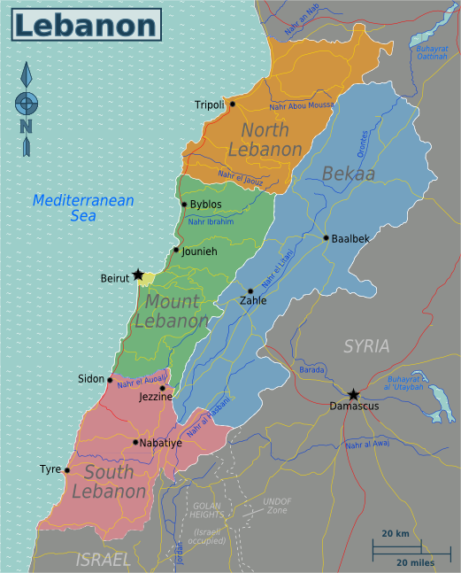
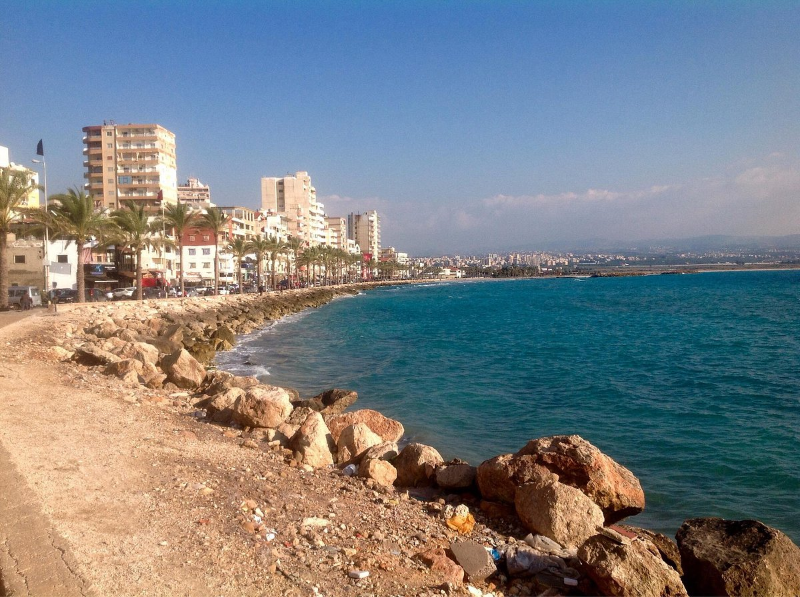
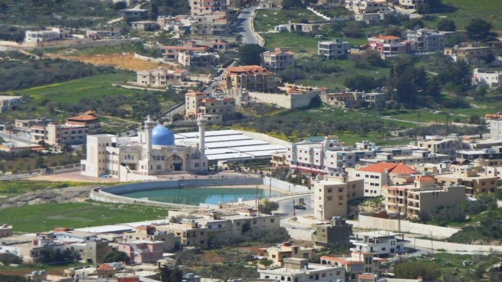
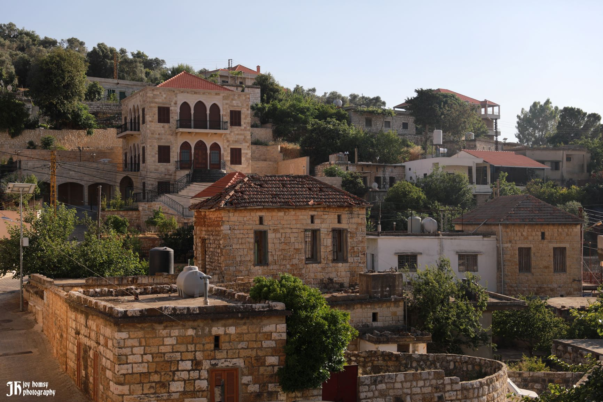
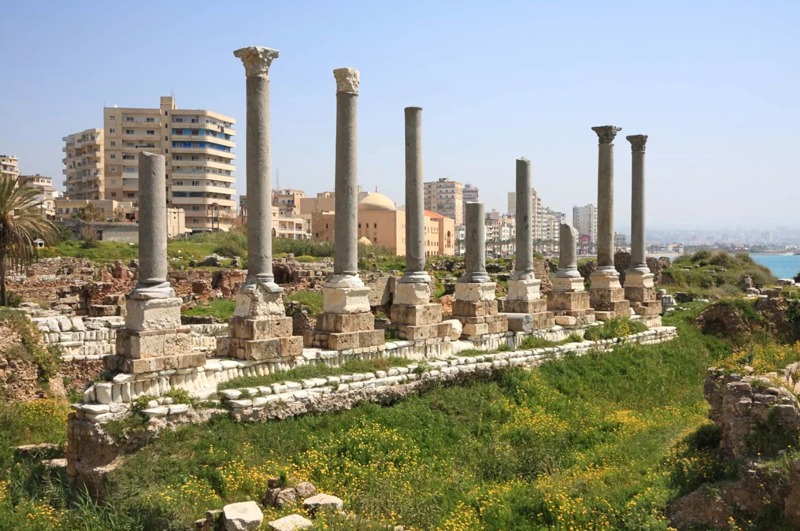
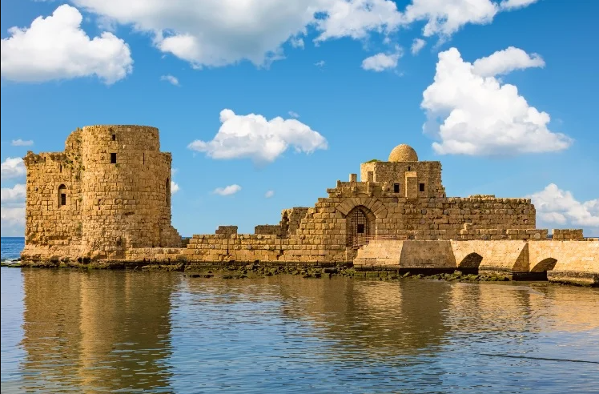
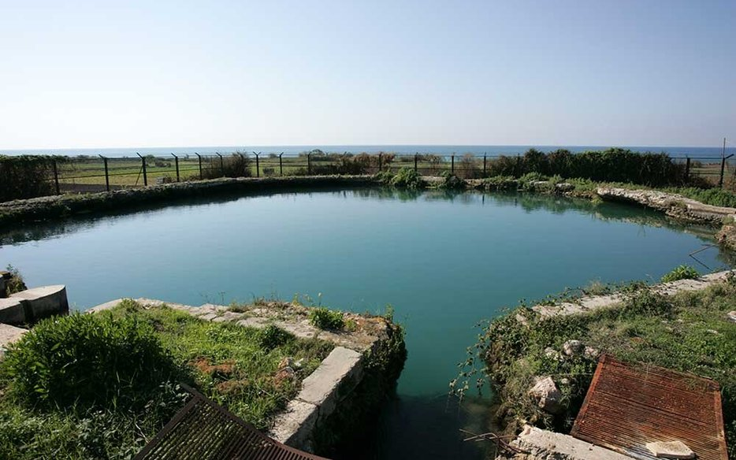
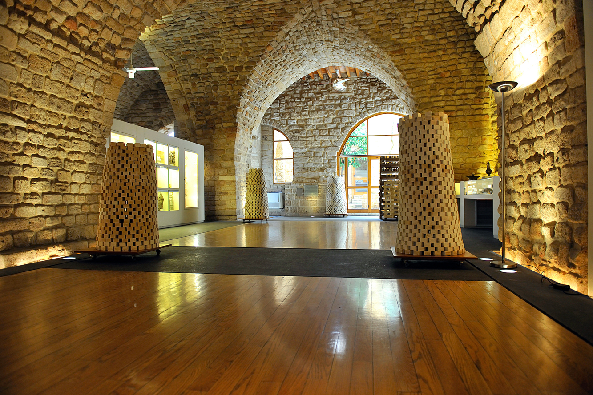
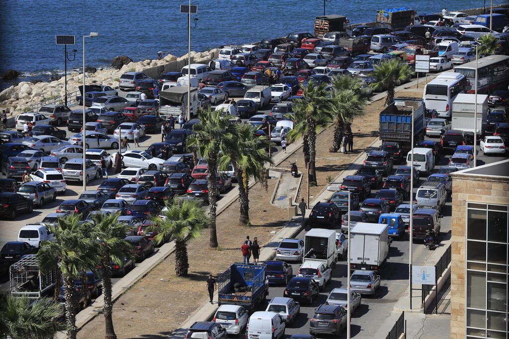
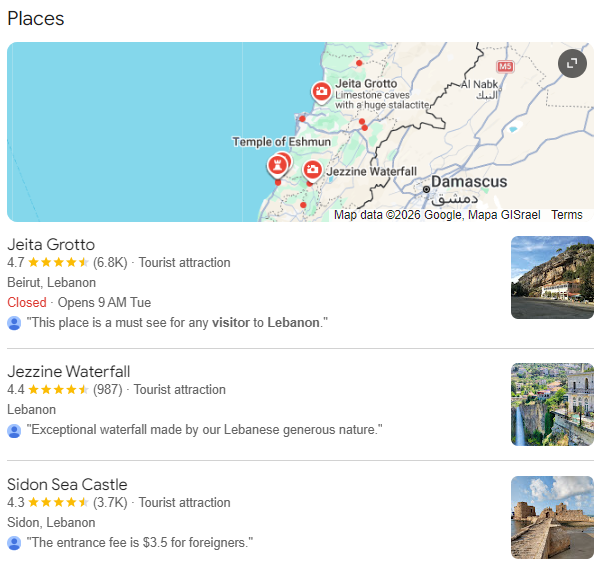

Ministry of Tourism Lebanon
DISCOVER LEBANON
South Lebanon Governorate stretches from the coastal city of Sidon in the north all the way down to the border with Israel in the south, encompassing some of the oldest continuously inhabited land in the world. The coastline here is gentle and generous, wide sandy beaches, rocky coves, and ancient ports that the Phoenicians sailed from three thousand years ago.
Inland, the terrain rises gradually from the coastal plain through citrus groves and tobacco fields into the rolling hills of the southern highlands. The landscape feels fertile and lived in. Every hillside seems to carry a village, every valley a river, every plain a memory of some civilization that came before. Tyre, the ancient Phoenician city, sits on a peninsula jutting into the sea and is surrounded by some of the most extraordinary underwater ruins in the Mediterranean.
The climate is the warmest in Lebanon, long dry summers and short mild winters. The south receives more sunshine than any other part of the country, and the sea here is calm, clear, and extraordinarily blue. It is a region that rewards slowness, the kind of place where you stop the car for no particular reason and find yourself staring at something beautiful.

Sidon is one of the oldest cities in the world, a Phoenician port that traded with Egypt, Greece, and Persia thousands of years before the modern era. Today it is a vibrant, layered city where a medieval Sea Castle sits in the harbor, a Crusader Khan houses a soap museum, and the old souk winds through centuries-old vaulted passageways smelling of spices, coffee, and fresh bread. It is one of Lebanon's most rewarding cities to simply walk through and get lost in.

Tyre is one of the great cities of the ancient world, a Phoenician island city that Alexander the Great spent seven months besieging before he finally connected it to the mainland with a causeway that still exists today. Its UNESCO listed archaeological sites include a Roman hippodrome, colonnaded streets, triumphal arches, and a vast necropolis, all lying remarkably intact beneath and around the modern city. Its beaches are among the finest in Lebanon, and the local seafood is extraordinary.

Known informally as the "capital of the south," Bint Jbeil is a proud inland town with deep roots in southern Lebanese culture and identity. Despite being heavily damaged in successive conflicts, the town has been rebuilt and continues to thrive as a symbol of southern resilience. Its weekly market, traditional architecture, and the warmth of its people make it a genuine and moving place to visit for those who want to understand what the south really is.

A small, predominantly Christian village in the southern hills, Deir Mimas is known for its beautifully preserved traditional stone architecture and its extraordinary stillness. Olive and fig trees surround it on every side, and the village square is shaded by ancient mulberry trees. It represents the quieter, more contemplative side of the south, a place where time seems to move at a different pace from the rest of Lebanon.

The ancient city of Tyre contains some of the most impressive Roman remains in the entire Middle East, a full size hippodrome that once seated 20,000 spectators, a colonnaded road lined with sarcophagi, triumphal arches, and a vast necropolis that stretches across the peninsula. Much of ancient Tyre lies underwater in the bay, visible to divers and snorkelers. Walking through the above ground ruins with the sea visible on both sides is one of the most atmospheric archaeological experiences in Lebanon.
Built by the Crusaders in the 13th century on a small island just off the Sidon shore, the Sea Castle is one of Lebanon's most iconic medieval monuments. Connected to the mainland by a narrow stone bridge, it guards the entrance to the ancient harbor and offers sweeping views of the old city behind it and the open sea ahead. The interior is largely intact, vaulted halls, defensive towers, and deep cisterns, and the walk along its outer walls at sunset is one of the most quietly beautiful moments the south has to offer.


The Tyre Coast Nature Reserve is one of Lebanon's most important protected areas, a stretch of sandy coastline that serves as a nesting ground for endangered loggerhead and green sea turtles from June through September. The beach here is long, clean, and backed by sand dunes rather than concrete, making it one of the last truly natural coastlines in Lebanon. Visiting during turtle nesting season with a guided night walk to observe the nesting process is an unforgettable experience.
The old souk of Sidon is one of the best-preserved traditional markets in Lebanon, a dense network of vaulted passageways, medieval khans, and specialist shops that has operated continuously since the Mamluk era. At its heart sits the Soap Museum, housed inside a restored 17th-century soap factory that once produced Sidon's famous olive oil soap for export across the Mediterranean. The museum walks you through the entire traditional soap making process, and the building itself, with its high stone vaults and ancient wooden presses, is extraordinary.

Sidon is about 45 km south of Beirut, roughly 45 minutes to an hour by car. Tyre is a further 45 km south of Sidon, making it about 90 km from Beirut in total. Both are very manageable as day trips from the capital.
International visitors arrive at Beirut–Rafic Hariri International Airport. The airport sits on the southern edge of Beirut, making it actually the closest major airport to the South Governorate. Sidon is just 30 to 40 minutes from the airport by car heading south.
Take the coastal highway south from Beirut. It passes directly through Sidon and continues to Tyre. A car is strongly recommended for exploring inland towns like Bint Jbeil and the southern highlands, where public transport is limited.
Frequent minibuses and service taxis depart from Cola Transport Hub in Beirut heading to both Sidon and Tyre throughout the day. This is a reliable and affordable option for visiting the two main coastal cities.
Some areas near the southern border remain sensitive. Always check current travel advisories before visiting towns close to the border. The main tourist sites in Sidon and Tyre are fully accessible and safe for visitors year round.

The South asks something of its visitors, a willingness to look beyond the surface, to sit with a complicated history, and to find beauty in a place that has known both great suffering and extraordinary resilience. Those who come with that openness leave with something they did not expect to find.
Walk the Roman hippodrome of Tyre in the early morning when it is empty, just you, the ancient stones, and the sound of the sea on both sides of the peninsula.
Get lost in the old souk of Sidon without a map. Follow the smell of fresh bread, turn into a vaulted passageway, find the soap museum by accident, and stay longer than you planned.
Sit on the walls of the Sidon Sea Castle at sunset and watch the light change over the harbor, the fishing boats, the old city behind you, the open Mediterranean ahead.
Visit the Tyre Coast Nature Reserve at dusk during turtle season and walk quietly along the beach while the nesting turtles make their way up from the sea.
Drive south past Tyre toward the border towns and stop in Bint Jbeil for lunch. Eat with the locals, listen to the stories, and understand what it means to build a life at the edge of everything.
